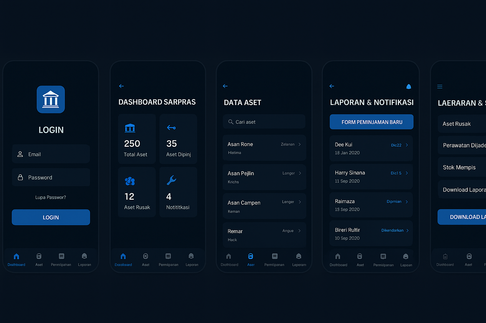

Sistem Informasi Inventaris dan Aset Kampus (Smart Inventory System) dirancang untuk membantu bagian Sarana dan Prasarana (Sarpras) dalam mengelola data aset kampus secara digital. Melalui sistem ini, admin dapat mencatat, memperbarui, dan memantau kondisi barang, riwayat peminjaman, serta laporan perawatan dengan cepat dan efisien. Sistem ini juga memiliki tampilan mobile agar mudah diakses oleh petugas lapangan dan staf kapan pun dibutuhkan.
